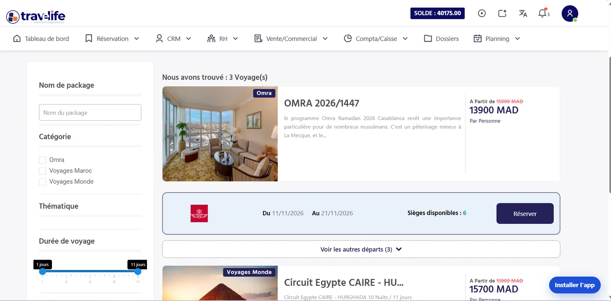
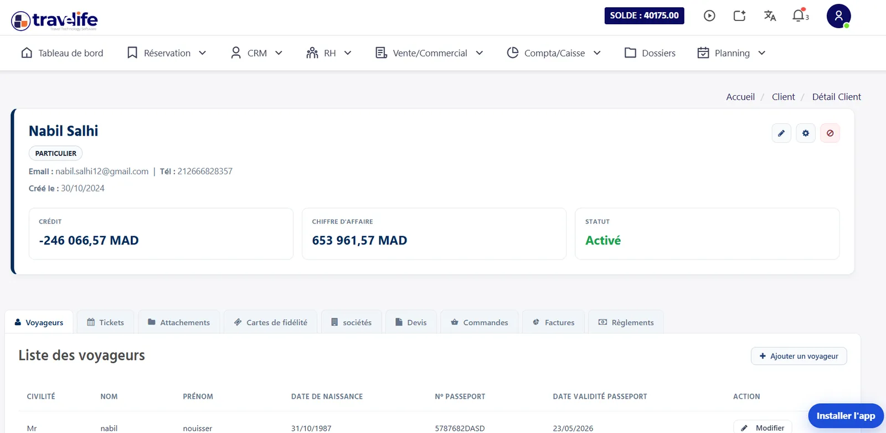
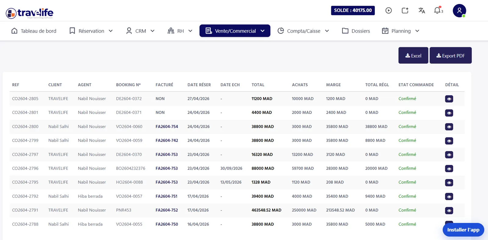
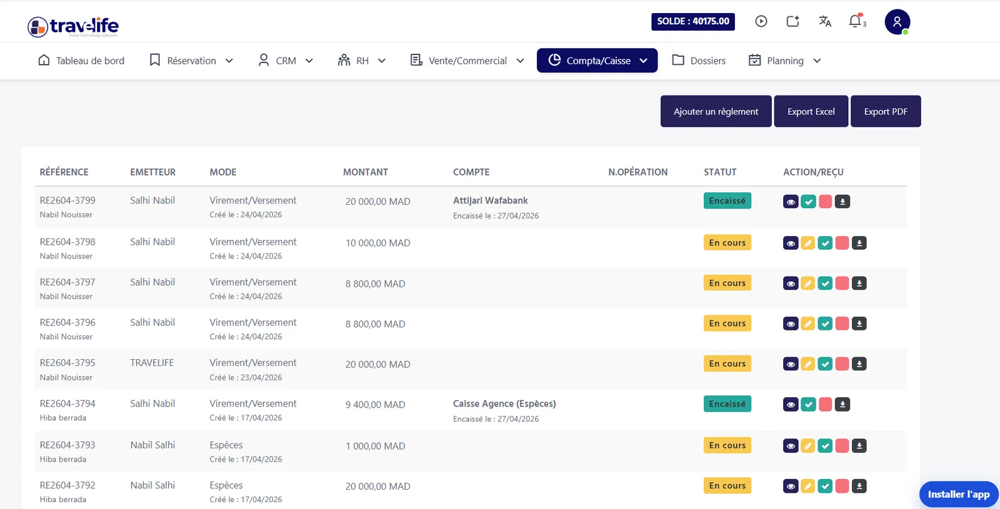
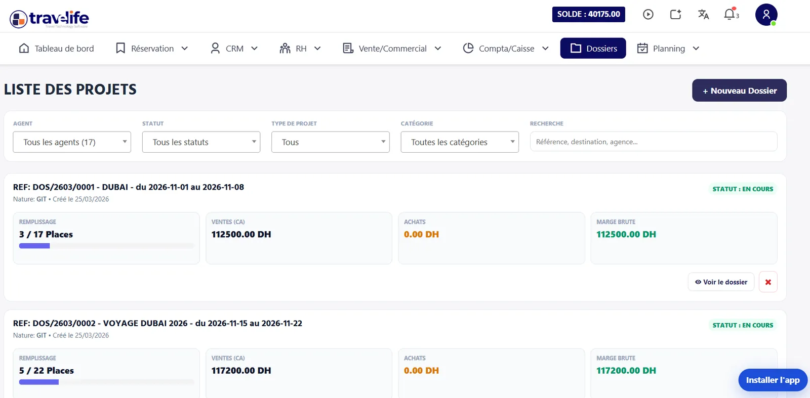
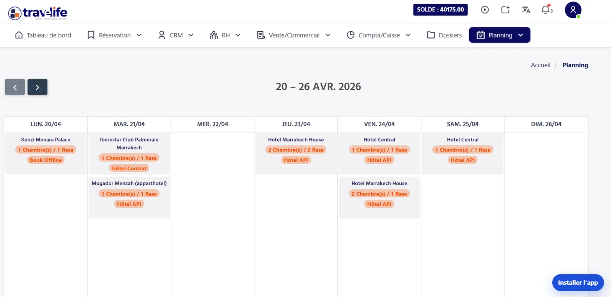

Bienvenue dans le guide officiel de Travelife. Ce centre d’aide explique, module par module, comment utiliser l’ERP au quotidien pour mieux organiser le travail de votre agence.
L’essentiel Guide d’utilisation de l’ERP Travelife
ContenuLe guide d’utilisation de l’ERP Travelife documente 8 modules : tableau de bord, réservation, CRM, ventes / commercial, compta / caisse, dossiers, planning et support.
RéservationLe moteur de réservation Travelife gère à la fois vos contrats directs (stock interne) et les offres mondiales connectées par XML / API, des bedbanks hôtelières à la billetterie aérienne GDS.
FinanceLe module Compta / Caisse de Travelife couvre la facturation clients et fournisseurs, les caisses, le rapprochement bancaire, le contrôle de la TVA (conformité DGI) et les états de crédit.
GroupesLe module Dossiers de Travelife suit le remplissage, la marge brute et le taux de marque des voyages de groupe (GIT), circuits et événements MICE.
SupportTravelife forme les équipes dès l’activation de la licence, répond via contact@travelife.ma, avec prise en main à distance si nécessaire.
CRM & planningLe CRM regroupe sur une fiche unique l’historique, les documents et la situation financière de chaque client, et le Planning affiche jour par jour hôtels, vols, transferts et activités.
01Général
Tableau de bord
Accès : Menu principal › Tableau de bord
Le tableau de bord est la page d’accueil de Travelife. Il rassemble en un seul écran les chiffres clés de l’agence : ventes, encaissements, marges, dossiers en cours. Le dirigeant voit d’un coup d’œil comment se porte l’agence, sans exporter de fichiers ni faire de calculs, et décide plus vite.
Travelife
Tableau de bord
Réservations 12
Devis & factures
SmartCRM
Paiements
Comptabilité & TVA
Portail B2B
Rapports
Bonjour Salma 👋
Votre agence · Casablanca
Rechercher un dossier…
Chiffre d'affaires1,28 M MAD▲ 18,4 %
Marge brute214 600▲ 9,2 %
Réservations486▲ 32
Impayés clients38 900▼ 12 %
Ventes 2026 B2C · B2B · Agence
Ventes par canal
B2C 46 %B2B 30 %Agence 24 %
Dernières réservations Aujourd'hui
CMN → IST · Famille Benali (4 pax)Turkish Airlines · Amadeus
Émis
Riad Kniza, Marrakech · 3 nuitsHotelbeds · Contrat direct
Option
Omra Ramadan · Groupe 28 pèlerinsProgramme offline · Visa inclus
Nouveau
Indicateurs de performance (KPI)
Reporting financier avancé
Chiffre d’affaires N vs N-1
Suivez l’évolution de votre chiffre d’affaires (CA) avec précision. Travelife classe automatiquement vos revenus par canal de vente et les compare à l’année précédente (N vs N-1).
CA des ventes global : par année, par mois et par jour.
Répartition par client : B2B (comptes sociétés) ou B2C (voyageurs individuels).
Suivi de facturation : comparaison entre le CA réalisé et le CA réellement encaissé.
Monitoring des flux métiers
Productivité
Gardez le contrôle sur l’activité de votre équipe. Le tableau de bord affiche les tâches importantes pour qu’aucun prospect (lead) ne soit oublié.
Propositions en cours : nombre de devis envoyés qui attendent encore la réponse du client.
Classements : top 5 des agents (les plus productifs) et top 5 des clients (le plus de chiffre d’affaires).
Alertes : tâches urgentes et échéances des dossiers.
Pilotage de la trésorerie
Cash-flow et encaissements
Restes à recouvrer & règlements
Sachez à tout moment combien d’argent entre et sort de l’agence. Travelife repère tout de suite les paiements manquants et les clients qui risquent de ne pas payer.
Suivi des sommes que vos clients vous doivent (restes à recouvrer, RAR) et de vos dettes fournisseurs.
Validation rapide des paiements reçus.
Graphiques des revenus à venir, calculés à partir des dossiers confirmés.
Analyse du mix-produit
Marge par département
Repérez les produits qui vous rapportent le plus. Travelife répartit vos bénéfices par département : billetterie aérienne, hébergement, packages touristiques, visas et services de transport.
Vision par département de vente.
Identification des produits les plus rentables.
02Production
Réservation & inventaire
Accès : Menu principal › Réservation
Le moteur de réservation Travelife gère en même temps deux sources : vos contrats directs (votre stock interne) et les offres du monde entier, reçues automatiquement de vos fournisseurs par XML / API. Vous vendez ainsi tout ce dont vos clients ont besoin, de l’hôtel au billet d’avion émis sur le GDS.

Hébergement & aérien
Gestion de l’hébergement
Réservation > Hôtel
Vendez vos tarifs négociés en exclusivité et, en même temps, les hôtels des grands fournisseurs mondiaux. Travelife met à jour les disponibilités et les prix automatiquement : votre offre reste compétitive.
Hôtel interne : saisie de vos contrats directs, allotements (chambres réservées à l’avance), stop sales (fermeture des ventes) et tarifs par saison.
Hôtel API : accès direct aux bedbanks mondiales (grossistes de chambres), avec confirmation immédiate.
Billetterie aérienne
Réservation > Vols (API)
Travelife est relié directement aux systèmes de réservation aérienne. Vous gérez vos PNR (dossiers de réservation aérienne) sans effort, avec des prix en temps réel et une émission de billets automatisée.
Recherche multi-destinations et filtre par compagnie.
Émission des billets via API et suivi des billets émis.
Production touristique & services
Logistique destination
Réservation > Activités / Transferts
Gérez vos transports et vos activités sur place. Les transferts peuvent être connectés par API à des prestataires externes pour voir leurs disponibilités en temps réel.
Connexion API pour les transferts internationaux.
Gestion des activités et excursions en mode offline (saisie manuelle).
Gestion des circuits & excursions
Réservation > Tours
Créez et gérez vos circuits et excursions organisées en saisie manuelle (offline) : itinéraire, prestations incluses et nombre de places.
Voyages organisés
Réservation > Packages
Gérez en saisie manuelle (offline) vos packages : voyages organisés, Omra et autres formules combinées.
Gestion commerciale visa
Réservation > Visa
Gérez vos demandes de visa en saisie manuelle (offline), avec un tarif défini pour chaque destination.
03Relation client
CRM & Customer Experience
Accès : Menu principal › CRM
Le module CRM (gestion de la relation client) de Travelife rassemble tout ce que vous savez sur vos clients. Conçu pour les agences de voyages, il garde au même endroit tous vos échanges avec vos partenaires (B2B) et vos voyageurs (B2C). Avec cette base unique, vous classez vos clients par profil, suivez les résultats commerciaux et retrouvez chaque échange en quelques secondes.

Gestion des tiers & intégrité des données
Fiche client & voyageur 360°
CRM > Clients > Liste des clients
Gardez tout l’historique de vos voyageurs pour leur offrir un service vraiment personnalisé. Travelife regroupe sur une seule fiche chaque achat, chaque préférence et chaque document officiel.
Classement : triez vos comptes par type (entreprise, particulier).
Détails voyageurs : passeports, programmes de fidélité et préférences alimentaires.
Situation financière : historique des ventes, paiements reçus et reste à payer, à jour en temps réel.
Fiche fournisseur & partenaires
CRM > Fournisseurs > Liste des fournisseurs
Comme pour vos clients, chaque fournisseur (hôtel, transporteur, guide) a sa fiche complète pour suivre votre relation avec lui.
Historique : toutes les réservations faites, annulées ou modifiées chez ce prestataire.
Suivi comptable : factures d’achat, paiements envoyés et solde du fournisseur, consultables immédiatement.
Traçabilité & workflow commercial
Historique des communications
CRM > Log Communication
Toute l’équipe voit ce qui a été envoyé à chaque client. Chaque message sortant est enregistré, ce qui vous protège en cas de litige commercial ou juridique.
Archivage des e-mails : propositions, devis et confirmations envoyés depuis l’ERP.
Qui a envoyé quoi : le nom de l’agent et la date de chaque envoi.
Pièces jointes : retrouvez la version exacte de la proposition ou de la facture envoyée au client.
Pipelines & conversion
CRM > Pipelines de ventes
Suivez chaque vente, de la première demande du client jusqu’à la confirmation. Repérez les affaires les plus intéressantes et voyez combien de temps prennent vos ventes.
Étapes des prospects (leads) : suivi visuel des étapes (qualification, proposition, négociation).
Support & qualité des données
Gestion des tickets & SAV
CRM > Tâches & Tickets
Organisez votre service client et vos réclamations. Avec les tickets, vous donnez une priorité à chaque demande spéciale et répondez plus vite à vos clients.
Hygiène de base de données
CRM > Clients > Gestion des doublons
Travelife repère automatiquement les clients enregistrés en double. Vous fusionnez les deux fiches en toute sécurité, sans perdre leur historique financier ni leurs dossiers.
04Commercial
Ventes & administration commerciale
Accès : Menu principal › Ventes / Commercial
Le module Ventes / Commercial transforme vos demandes en ventes. Il couvre tout le parcours : vous construisez une offre sur mesure, le client la valide, puis vous passez commande auprès des fournisseurs. Les réservations reçues par API et celles saisies à la main sont réunies au même endroit, pour garder le contrôle de tout votre catalogue.

Ingénierie de l’offre & propositions
Création de devis & propositions tours
Ventes / Commercial > Propositions > Nouveau devis
Construisez des offres sur mesure en combinant plusieurs prestations. Vous saisissez chaque ligne de prix à la main et l’adaptez exactement à la demande du client.
Nouveau devis : créez rapidement une offre personnalisée.
Liste des devis : retrouvez les propositions en attente de réponse pour relancer vos clients.
Liste des propositions tours : gérez à part les itinéraires complexes et les circuits organisés.
Quotation & calcul de coûts
Ventes / Commercial > Quotation
Pour les voyages de groupe ou les projets complexes, calculez vos coûts et votre marge avant d’envoyer le devis.
Nouvelle quotation : simulez les coûts et la marge brute d’un dossier.
Liste des quotations : retrouvez tous les calculs de prix déjà réalisés pour vos clients.
Gestion des ventes & commandes
Cycle de commande client
Ventes / Commercial > Ventes
Quand le client accepte l’offre, le devis devient une commande ferme et un dossier de réservation.
Nouvelle commande : enregistrez la vente ferme, la référence du dossier est créée automatiquement.
Liste des commandes : voyez où en est chaque vente de l’agence.
État des ventes : analysez vos ventes par période, par agent ou par produit.
Commandes fournisseurs & BC
Ventes / Commercial > Achats
Gérez vos commandes auprès de vos fournisseurs. Travelife crée les bons de commande (BC) qui confirment et sécurisent chaque prestation.
Liste des commandes : tous vos achats en cours auprès des prestataires.
État des achats : analysez vos coûts de revient pour surveiller votre rentabilité.
Book Offline & stock manuel
Réservations hors-flux (offline)
Ventes / Commercial > Book Offline
Certaines prestations ne sont pas connectées par API (guides locaux, restaurants, petits hôtels). Ce module vous permet de les saisir à la main et de les ajouter au dossier du client.
Nouvelle réservation : saisie manuelle d’une prestation (vol, hébergement, transfert, activité, bateau, extra).
Liste des réservations : récapitulatif de toutes les prestations saisies à la main, pour le suivi des opérations.
Inventaire & liste des prestations
Ventes / Commercial > Réservations
Consultez tous les services réservés, qu’ils viennent d’une connexion automatique ou d’une saisie manuelle.
Liste des billets / vols : suivi de tous les billets d’avion émis.
Liste des hôtels (interne & API) : suivi des nuitées confirmées.
Liste des packages : tous les forfaits vendus, au même endroit.
05Finance
Ingénierie financière & Compta / Caisse
Accès : Menu principal › Compta / Caisse
Le module Compta / Caisse de Travelife ERP gère toutes les finances de l’agence, selon les règles comptables propres aux agences de voyages. Chaque vente alimente directement la comptabilité : vous suivez l’argent reçu des clients, l’argent versé aux fournisseurs et vos obligations fiscales (TVA, TVA sur marge, états de crédit).

Gestion de la facturation (clients & fournisseurs)
Cycle de facturation & recouvrement
Compta / Caisse > Clients
Facturez et encaissez plus vite grâce à l’automatisation des factures et des paiements. Vous voyez clairement ce que chaque client vous doit encore.
Facturation : factures à l’unité, factures groupées et avoirs.
Règlements : un paiement pour une facture, ou un paiement pour plusieurs factures.
Suivi : état financier détaillé et liste des dossiers pas encore facturés.
Gestion des achats & dettes
Compta / Caisse > Fournisseurs
Comparez chaque facture fournisseur avec les réservations réellement faites. Vous maîtrisez vos coûts et ne payez jamais un prestataire en trop.
Saisie : enregistrement des factures fournisseurs et des avoirs sur achats.
Paiements : suivi des paiements envoyés et historique des opérations bancaires.
Prévision : état financier par fournisseur pour anticiper les échéances et vos besoins de trésorerie.
Trésorerie & flux de caisse
Monitoring des liquidités
Compta / Caisse > Caisses
Voyez en temps réel l’argent disponible dans chaque point de vente et sur chaque compte bancaire. Chaque centime est tracé.
État de caisse : solde attendu et solde réel de vos caisses, en un clic.
Transactions : journal complet des entrées (ventes) et des sorties (charges / achats).
Rapprochement bancaire : vérifiez que vos relevés de banque correspondent à l’ERP.
Analytique & soldes
Compta / Caisse > Comptabilité
Une vue d’ensemble de la santé financière de l’agence : voyez immédiatement qui vous doit de l’argent et combien vous devez à vos partenaires.
Soldes : liste des sommes dues par vos clients et des sommes que vous devez à vos fournisseurs.
Modes de paiement : taxes et frais appliqués selon le mode d’encaissement (TPE, virement, etc.).
Fiscalité & conformité DGI
Contrôle de la TVA
Compta / Caisse > Comptabilité > TVA
Préparez vos déclarations fiscales en quelques clics grâce à des rapports conformes à la réglementation (DGI). Travelife sépare automatiquement les opérations soumises à la TVA et celles qui en sont exonérées.
Control TVA : vérifiez la TVA collectée sur les ventes par rapport aux encaissements.
Control TVA Fournisseurs : suivez la TVA récupérable sur vos factures d’achat.
Gestion des crédits & risques
Compta / Caisse > Comptabilité > États de crédit
Évitez les impayés grâce aux états de crédit. Ces rapports vous alertent quand un client en compte dépasse le plafond de crédit que vous lui avez accordé.
État de crédit clients : risque par client et délai moyen de paiement.
État de crédit fournisseurs : crédits que vous accordent vos principaux partenaires.
06Opérations
Gestion des dossiers & projets
Accès : Menu principal › Dossiers
Le module Dossiers sert à gérer vos voyages de groupe (GIT), vos circuits et vos événements d’entreprise (MICE). Sur un seul tableau de bord, il réunit les ventes faites à chaque voyageur et les achats faits pour tout le groupe. Vous savez ainsi précisément ce que rapporte chaque dossier.

Pilotage opérationnel & yield
Suivi du remplissage (pax)
Indicateurs de progression
Voyez immédiatement combien de places sont vendues sur chaque départ, grâce à des jauges mises à jour en temps réel.
Places vendues : nombre de places vendues sur le total disponible (ex. : 3 / 17 places).
Taux de remplissage : pourcentage calculé automatiquement, pour savoir s’il faut relancer votre communication.
Statut : dossiers « En cours », « Confirmés » ou « Clôturés ».
Performance financière
Marges réalisées et prévisionnelles
Suivez précisément ce que rapporte chaque projet : la marge déjà réalisée et la marge prévue.
Ventes (CA) : total des commandes clients liées au projet.
Marge brute & taux de marque : profit et markup (taux de marge) du dossier, calculés en temps réel.
Achats non facturés : alerte quand un fournisseur n’a pas encore envoyé sa facture pour une prestation commandée.
Consolidation des flux (ventes & achats)
Journal des ventes du dossier
Suivi client
Retrouvez toutes les commandes clients d’un projet, facturées ou non, pour un suivi client sans faille.
Traçabilité : liste complète des numéros de commande (CO) et des factures (FA) liées.
Détail par client : voyageurs, montant payé par chacun et statut de facturation.
Journal des achats & achats groupés
Maîtrise des coûts de revient
Maîtrisez vos coûts en enregistrant les prestations achetées pour l’ensemble du groupe.
Ajouter un achat groupé : saisissez en une fois une facture fournisseur (hébergement, transport, guide) qui concerne tout le dossier.
Contrôle des BC : vérifiez que les bons de commande correspondent aux services réservés et aux factures reçues.
07Opérations
Planning logistique & coordination
Accès : Menu principal › Planning
Le module Planning est le calendrier de votre agence. Il affiche jour par jour toutes les prestations réservées : hôtels, vols, transferts, activités. Vos équipes savent qui arrive, qui part et quoi organiser, sans rien oublier.

Vues calendriers & monitoring
Calendrier d’hébergement dynamique
Planning > Hôtels
Suivez vos réservations d’hôtel jour par jour. Le planning montre clairement d’où vient chaque réservation, pour réagir plus vite.
Hôtel contrat : nuitées réservées sur vos propres contrats négociés en direct.
Hôtel API : réservations confirmées par les plateformes partenaires connectées (flux XML).
Book Offline : réservations saisies à la main chez les prestataires non connectés.
Capacité : nombre de chambres et de réservations par hôtel.
Coordination des mouvements
Planning > Activités & Vols
Organisez les transports et les activités pour qu’aucun voyageur ne reste sans prise en charge.
Activités : planning des excursions, transferts et services sur place, pour répartir au mieux guides et chauffeurs.
Vols : arrivées et départs, indispensables pour organiser l’accueil à l’aéroport et les navettes.
Avantages opérationnels
Anticipation logistique
Vue hebdomadaire
Avec la vue par semaine, vos agents repèrent à l’avance les périodes chargées et vérifient en un coup d’œil les chambres disponibles.
Centralisation des sources
Un seul calendrier
Travelife affiche sur un seul calendrier les réservations de toutes les sources (API, saisie manuelle, contrats en stock) : aucune prestation n’est oubliée.
08Assistance
Accompagnement & support technique
Notre travail ne s’arrête pas à l’installation de Travelife ERP. Nous vous accompagnons à chaque étape de la digitalisation de votre agence, pour que vos équipes tirent le meilleur de nos outils.
Assistance directe et service client
Formation initiale détaillée
Dès l’activation de la licence
Dès l’activation de votre licence, nos experts forment vos équipes lors d’une session complète. Objectif : maîtriser tout le travail de A à Z, de la création du client à la clôture comptable.
Assistance à distance
Selon votre pack de maintenance
Si nécessaire, l’équipe technique Travelife prend la main à distance sur votre poste pour résoudre le problème avec vous.
Besoin de support ?
Clients Travelife
Vous êtes déjà client et vous avez une question technique ? Contactez notre service assistance :
Avec Travelife, vous avez un logiciel complet et une équipe qui connaît le tourisme au Maroc. Chaque mois, nous améliorons l’outil à partir de vos retours ! En savoir plus sur Travelife.
FAQ
FAQ du guide d’utilisation ERP Travelife
Où trouver une fonction, comment suivre vos marges ou contacter le support : les réponses rapides du manuel Travelife.
Une question technique ?
Les clients Travelife sont accompagnés par le service assistance, avec prise en main à distance si nécessaire.
Pour créer un devis dans Travelife, ouvrez le menu Ventes / Commercial > Propositions > Nouveau devis. Cet écran vous permet de construire une offre sur mesure en combinant plusieurs prestations et en adaptant chaque ligne de prix à la demande du client.
Vous suivez ensuite les devis envoyés dans la Liste des devis, pour relancer les clients qui n’ont pas encore répondu. Pour un voyage de groupe ou un projet complexe, utilisez d’abord Ventes / Commercial > Quotation afin de simuler les coûts et la marge brute avant l’émission du devis. Une fois accepté, le devis devient une commande dans Ventes / Commercial > Ventes.
Comment suivre la marge d’un voyage de groupe dans Travelife ?
La marge d’un voyage de groupe se suit dans le module Dossiers (Menu Principal > Dossiers), conçu pour les voyages de groupe (GIT), circuits et événements MICE.
Chaque dossier affiche en temps réel le chiffre d’affaires des commandes clients liées, la marge brute, le taux de marque et le taux de remplissage (par exemple 3 / 17 places). Les achats groupés (hébergement, transport, guide) sont saisis dans le journal des achats du dossier. Une alerte vous prévient quand un fournisseur n’a pas encore envoyé sa facture pour une prestation commandée. Vous connaissez ainsi la rentabilité réelle de chaque départ.
Comment contrôler la TVA avec le logiciel Travelife ?
Le contrôle de la TVA se fait dans Compta / Caisse > Comptabilité > TVA. Travelife produit des rapports conformes à la réglementation en vigueur (conformité DGI) et sépare les opérations soumises à la TVA de celles qui en sont exonérées. Pour les règles propres aux agences, voir notre page TVA sur marge.
Le rapport Control TVA vérifie la TVA collectée sur les ventes par rapport aux encaissements, et Control TVA Fournisseurs suit la TVA récupérable sur les factures d’achats. Ces états facilitent la préparation de vos déclarations fiscales. Les états de crédit clients et fournisseurs, dans le même menu Comptabilité, complètent le pilotage financier de l’agence.
Peut-on gérer dans Travelife des prestations non connectées par API ?
Oui. Le module Ventes / Commercial > Book Offline permet d’intégrer manuellement les prestations non connectées via API, comme les guides locaux, les restaurants ou les petits hôtels.
Vous saisissez ainsi des vols, hébergements, transferts, activités, bateaux ou extras directement dans le dossier global du client. Ces réservations saisies à la main apparaissent ensuite dans la liste des réservations et dans le Planning, aux côtés des réservations API et des contrats hôteliers directs. Travelife centralise ainsi toutes les sources sur un seul calendrier, pour qu’aucune prestation ne soit oubliée.
Une formation à l’ERP Travelife est-elle prévue au démarrage ?
Oui. Dès l’activation de votre licence, les experts Travelife organisent une session de formation complète pour vos équipes, afin de maîtriser le flux opérationnel de A à Z, de la création du client à la clôture comptable.
Après la formation, ce guide utilisateur sert de référence module par module. Pour toute question technique, le service assistance répond par e-mail à contact@travelife.ma, avec prise en main à distance si nécessaire.
Prêt à digitaliser votre agence de voyage ?
Démonstration gratuite et personnalisée de 30 minutes. Nous analysons votre activité et vous montrons comment Travelife vous fait gagner du temps.